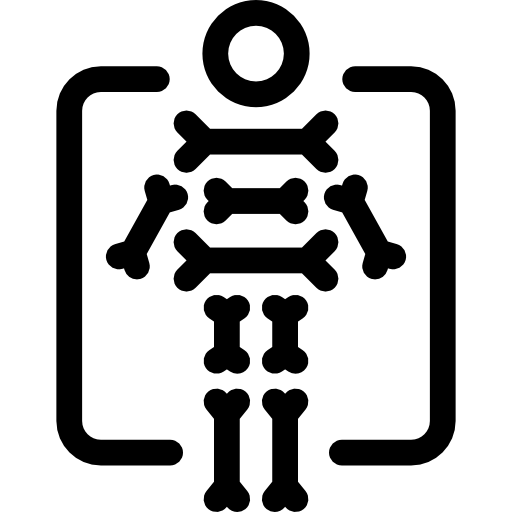

Radiologia
Licenciado: Ponce Aleman
Turnos Programados

Pediatria
Dra. Paredes Victoria
Lunes/Martes/Miercoles
Odontologia
Dra. Romero Yanina
Turnos Programados
Medicina Gral
Dr. Poli Pablo
Sabados

Ecografia
Dr. Theaux Cesar
Luness
Ginecologia
Dr. Calvillo Gomez Carlos
Jueves
Radiologia
Licenciado: Ponce Aleman.